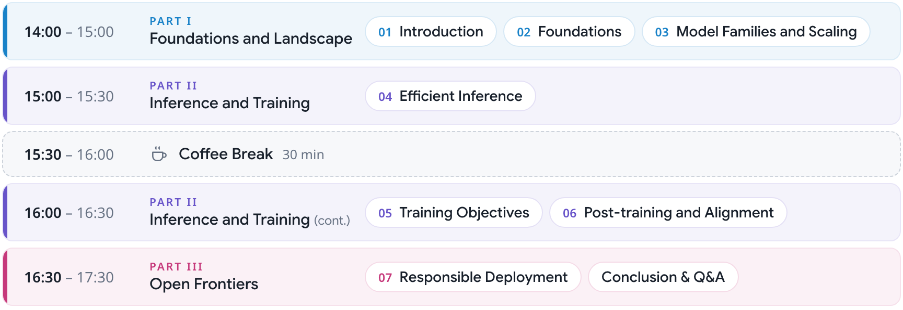

- Date
- Tuesday, November 10, 2026
- Place
- Muhe Hall B, Hengqin, China


Diffusion language models (DLMs) replace left-to-right decoding with iterative denoising: one model call can decide several tokens, and each prediction can see context on both sides. DLMs have now reached LLM scale, with open-weight models and commercial APIs. This tutorial gives NLP researchers an entry point and a map of the field, assuming no background in diffusion. We first define diffusion for text, relate it to autoregressive and masked language modeling, and survey how large DLMs are built. We then show how inference, training, and post-training, including reinforcement learning, must be rethought around this new generation process. We close with two open frontiers: evaluating the reliability, safety, and social bias of DLMs, and moving beyond discrete diffusion to continuous flow-based language models. Throughout, we separate demonstrated results from open problems, so that participants can place new papers on this map and check reported speedups for themselves.
The papers referenced in the tutorial will be listed here. TBA
@inproceedings{oba-bollegala-2026-diffusion,
title = "Diffusion Language Models: Foundations and Frontiers of Non-Autoregressive Language Generation",
author = "Oba, Daisuke and
Bollegala, Danushka",
editor = "Okazaki, Naoaki and
Wang, Zhongqing",
booktitle = "Proceedings of the 15th International Joint Conference on Natural Language Processing and the 5th Conference of the {A}sia-Pacific Chapter of the {A}ssociation for {C}omputational {L}inguistics: Tutorial Abstracts",
month = nov,
year = "2026",
address = "Hengqin, China",
publisher = "Association for Computational Linguistics",
url = "https://aclanthology.org/2026.aacl-tutorials.6/",
pages = "44--50",
ISBN = "979-8-89176-443-9"
}